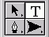
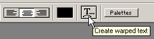
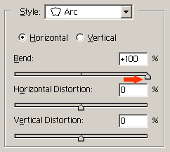
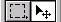
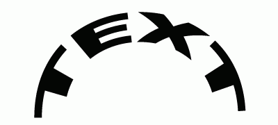
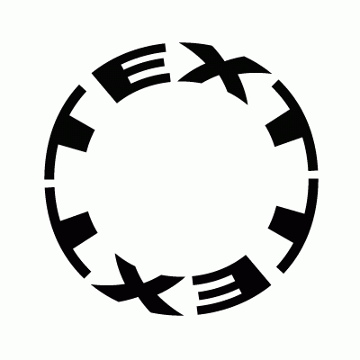
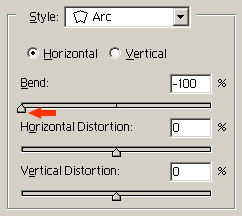

| Взято с: | www.metamorphozis.com |
| Перевод: | Domino |
В этом уроке мы научимся писать текст по окружности, как на иллюстрации.
1.) Начнем с создания нового файла. File > New. Укажите размеры 400(400, выберите белый фон.
2.) Нажмите клавишу D для установки цвета рисования в черный.
3.) В палитре инструментов выберите инструмент Text.

4.) На панели инструментов выберите шрифт Arial Black, размер 60 пунктов и метод сглаживания Smooth.
5.) Нажмите кнопку выбора инструмента создания искаженного текста Warped Text.

6.) В появившемся диалоговом окне в выпадающем списке выберите искажение по окружности Arc, горизонтальное направление Horizontal и установите ползунок изгиба Bend в +100%.

7.) Наберите текст и выберите инструмент Move для изменения расположения текста в рабочей области.

Набранный текст должен выглядеть так:

8.) Скопируйте слой Layer > Duplicate Layer и разверните его Edit > Transform > Rotate 180. Для изменения расположения используйте инструмент Move.
Теперь текст должен выглядеть так:

9.) Выберите инструмент Text. Установите размер шрифта 48 пунктов и кликните на рабочей области для установки места печати текста. Повторите шаги 5, 6 и 7.
Примечание: можно воспользоваться инструментом Free Transform, чтобы свести низ текста с центральной линией рисунка. Нажмите Ctrl+T для выбора инструмента, поверните, как вам необходимо, и выберите инструмент Move для применения изменений.
10.) Выберите инструмент Text. Установите размер шрифта 24 пункта и щелкните по рабочей области для установки места печати текста. Повторите шаги 5, 6 и 7, только в этот раз тащите ползунок степени искажения влево, к значению -100%.

Теперь всё готово.
Теперь, чтобы добавить использованные эффекты, можете скачать psd-файл здесь.
Откройте файл в Photoshop и дважды кликните по любому из текстовых слоев в списке слоев. Откроется палитра стилей. Нажмите кнопку New Style. Откроется диалоговое окно. Нажмите OK, чтобы закрыть его, и Cancel для закрытия палитры стилей. Повторите процедуру для каждого текстового слоя.
Теперь выберите пункт меню Window > Show Styles. В списке слоев Layers выберите один из текстовых слоев, на котором желаете применить эффект, и выберите какой-либо из понравившихся стилей палитры стилей Styles.